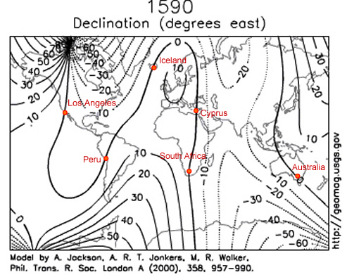

|
GEOMAGNETIC TRAVELLOGUE earth's magnetic field from the year 1590. It is a work in progress. The year 1590 is significant, as it coincides with the Therefore, my project explores incidences of macro- follow the links below to view images: Journey #1Works for Los Angeles Works for Cyprus |
 |